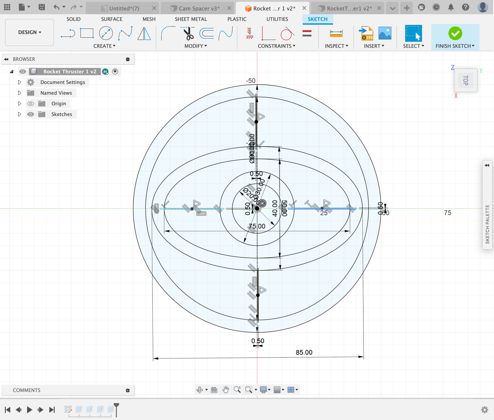

Final Project
Overview:
For my final project, I worked with Tiger Strake, together we created a thrust vectoring rocket. Ever since I was young I have always been interested in rockets and things that fly in general. This project gave me the chance to build something that was truly challenging as well as fun at the same time. In the end we did not get to fly the actual rocket but we ended with a proof of concept that we think will fly in the future.
Sketches:
This was just one of many ideas that we had on the chalkboard at first. Once this phase was done we moved onto designing the main component of the rocket, the thruster system. We took inspiration from the following designs from BPS Space
We realized that this design was very complicated and needed more simplicity. The design above had a lot of useless screws and axles. We came up with a design that did not include any extra screws an axles using a complient mechanism.

This was my first iteration of a TVC module. I made the strips holding the rings together a little to thin and in the second design I also realized that there is no use of an ellipse ring in the middle.

This was the second iteration that we had developed, we used much thicker pipes to connect the inner and outer rings ans it allowed for a more stable structure. Next we started to work on the mounting for the TVC. This mounting needed to be strong as there would be a lot of force being put on this peice.


We came up with the idea of adding 6 heat inserts and adding 6 screws to support the system. Now that we had the complient mechanism and the mounting for the mechanism, we needed to figure out a way to move it. We decided on servos and started to figure out how to mount them onto the TVC module.

After one week of designing and printing we came up with the above, a servo mounting system that would not hinder the motion of the thruster. Next we needed to find a way to connect the servos to the truster.

After another week of designing we finally stumbled upon this. The X-Axis looks odd but this is one of the only way to connect the system together without having it run into itself. After printing this system and attaching the servos to it, we first only focus on the motion of the servos and not using the gyro yet.
Soon we added the gyro aswell and we were able to control the system with a gyro sensor and servos.
The code below is the code we used to control the servo motor with the gyro.
#include
#include
#include
Servo sg90_x; // Servo for x-axis
Servo sg90_y; // Servo for y-axis
int servo_x_pin = 2; // Choose a pin for the x-axis servo
int servo_y_pin = 3; // Choose a pin for the y-axis servo
MPU6050 sensor;
int16_t ax, ay, az;
int16_t gx, gy, gz;
void setup()
{
sg90_x.attach(servo_x_pin);
sg90_y.attach(servo_y_pin);
Wire.begin();
Serial.begin(9600);
Serial.println("Initializing the sensor");
sensor.initialize();
Serial.println(sensor.testConnection() ? "Successfully Connected" : "Connection failed");
delay(1000);
Serial.println("Taking Values from the sensor");
delay(1000);
}
void loop()
{
sensor.getMotion6(&ax, &ay, &az, &gx, &gy, &gz);
// Mapping for x-axis servo
int x_angle = map(ax, -17000, 17000, 0, 180);
Serial.print("X-Axis: ");
Serial.println(x_angle);
sg90_x.write(x_angle);
// Mapping for y-axis servo
int y_angle = map(ay, -17000, 17000, 0, 180);
Serial.print("Y-Axis: ");
Serial.println(y_angle);
sg90_x.write(y_angle);
delay(80);
}
With this code, the x and y directions are controlled by an MPU6050 sensor and two servo motors. Through the Wire library, it talks to the sensor and gets information about acceleration and gyroscope readings. The SG90 servo motors are used, and the Servo library is used to control them.
In the setup part of the code, each servo is connected to a specific pin for the x and y directions. It sets up communication with the sensor and then checks to see if the link is working before moving on.
In the loop part, things happen over and over again. It gets acceleration and gyroscope numbers from the motion sensor over and over again. Then, these numbers are turned into angles that can be used by servos to move along the x and y directions.
Using the map function, the acceleration number (ax) for the x-axis servo is mapped to an angle between 0 and 180 degrees. For the y-axis servo, the same mapping process is used, but this time the y-axis acceleration number (ay) is used. These mapped angles determine where the servo motors are, so they can move based on the data from the sensor.
On the Serial Monitor, the mapped angles for both the x and y directions are shown so that you can see how the servo positions change based on the motion data from the sensor. A small delay is also added at the end of each loop cycle to control how quickly the sensor data is read and the servo positions are changed.
Now that the TVC Module was done and coded we focused on the rocket
We did aerodynamics tests on the nose cone and we came up with the shape shown above.
We also wanted to do a fully modular system that you could take apart and add specific sensors etc.
Final Product:
Remarks:
Overall this project was a great success, it allowed me to learn many thing and use many tools in ways I had never used before. I also learned how to work well in a team and be able to document things well.